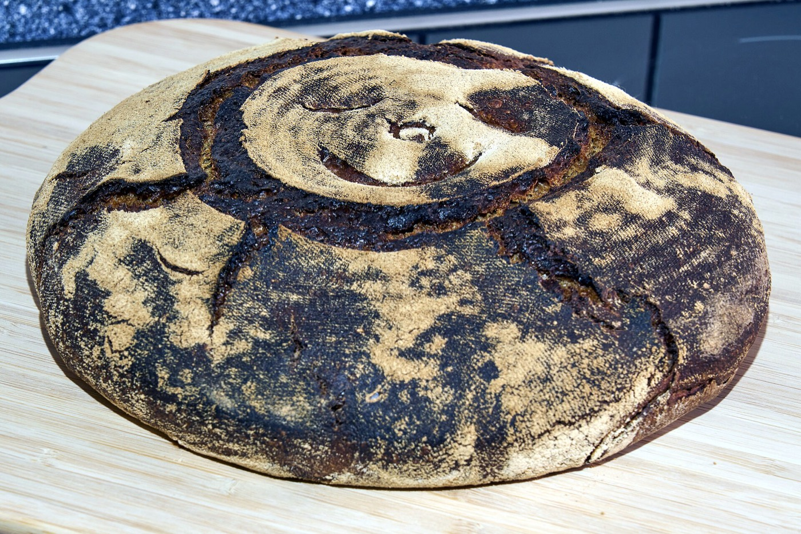
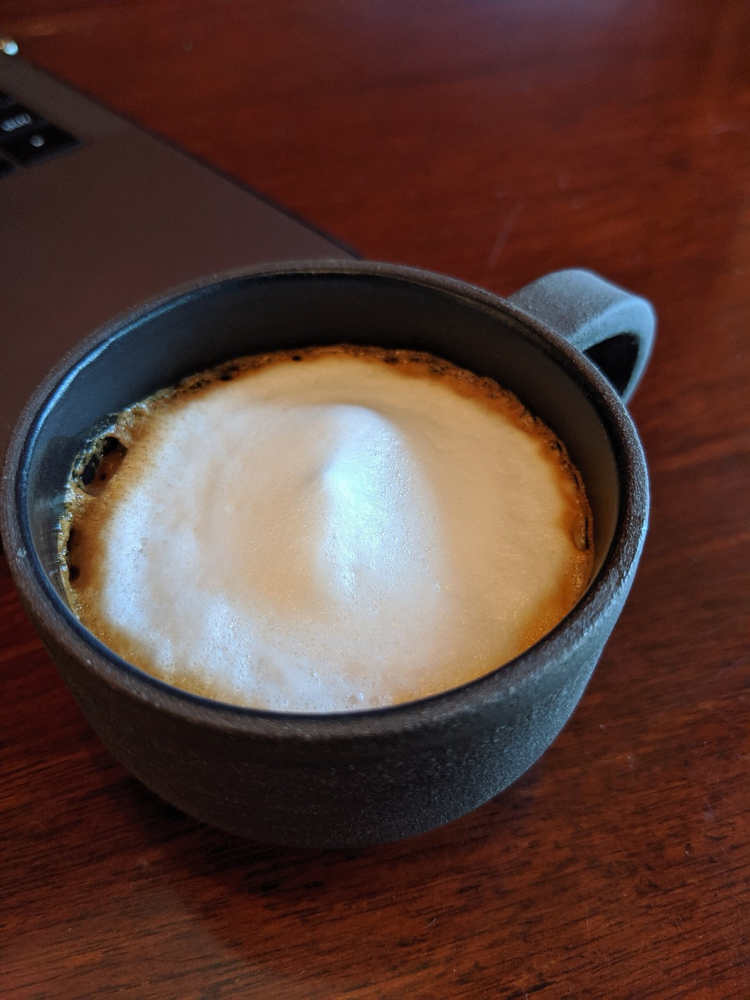

Sourdough, pastry and good coffee in a quiet corner of Bophut.


Everything is baked on the premises, the sourdough too. The room is calm and simple, our cats wander about, and dogs are welcome.
109 Bo Phut road, Bo Put, Koh Samui 84320
Your hours go here. Tell us and we will add them.